先看主线，再背公式，最后做题
每个专题页都按“概念框架、公式变量、典型题型、原讲义对照、自测问题”组织。复习时从左侧目录跳转，遇到计算题直接回到高亮公式段。
本章重点是可靠性与 RAID。复习时把 I/O 性能指标、可靠度公式、RAID 各级特点放在一起记，计算题就会清楚很多。
每个专题页都按“概念框架、公式变量、典型题型、原讲义对照、自测问题”组织。复习时从左侧目录跳转，遇到计算题直接回到高亮公式段。
12 页原讲义截图可展开核对，适合考前查原表、原图和例题。
正文已经把知识点重新组织；这里保留讲义页面缩略图，方便你在需要时回看原版题目、图和表。
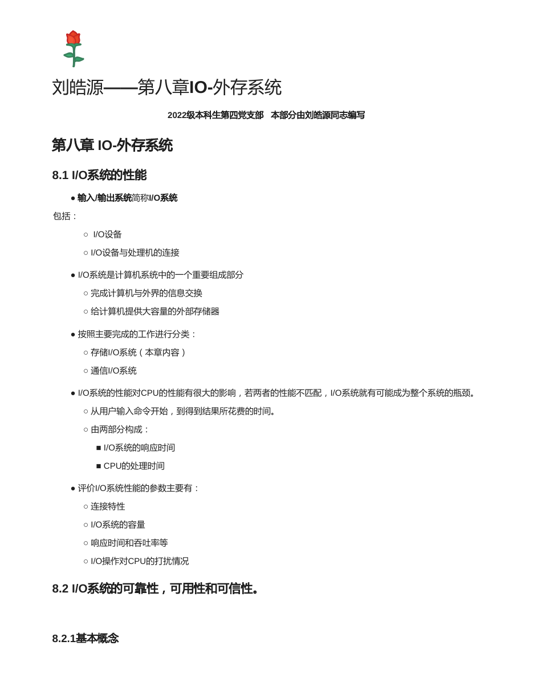
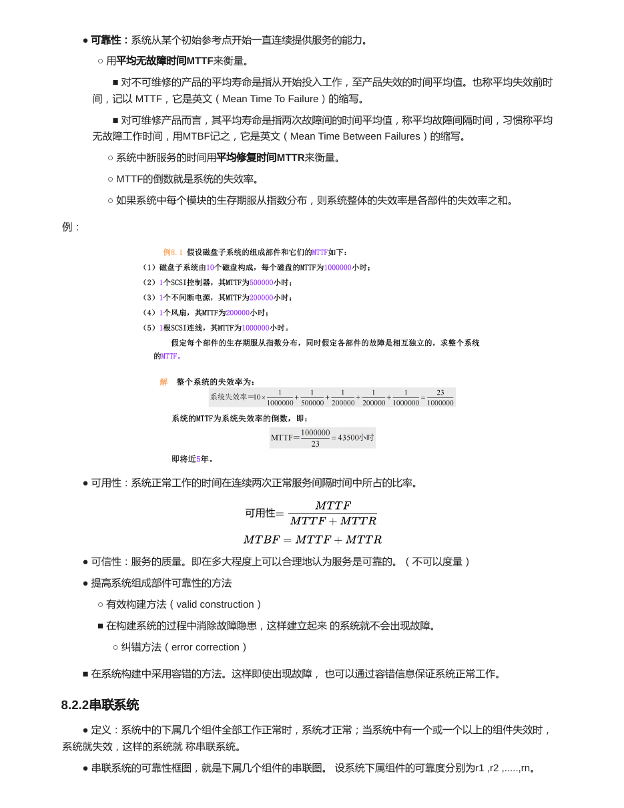
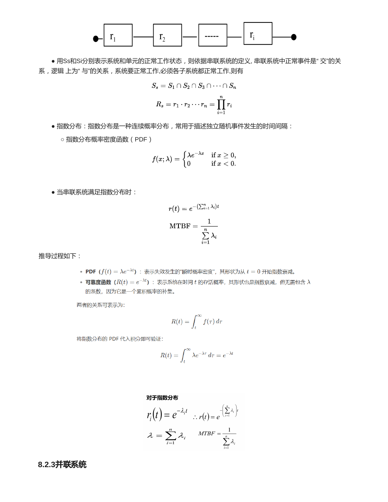
I/O 系统完成计算机和外界的信息交换，也为计算机提供大容量外部存储器。课程重点偏向存储 I/O 系统。
| 概念 | 含义 | 常用指标 |
|---|---|---|
| 可靠性 Reliability | 系统从某个初始参考点开始连续提供服务的能力。 | MTTF；失效率 = 1 / MTTF。 |
| 可用性 Availability | 系统正常工作时间在正常服务间隔中的比例。 | MTTF / (MTTF + MTTR)。 |
| 可信性 Dependability | 服务质量，即多大程度上可合理认为服务可靠。 | 通常不可直接度量。 |
所有组件都正常，系统才正常。任意一个组件失效，系统失效。
只要至少一个组件正常，系统就正常。全部组件失效，系统才失效。
混联系统先判断结构：RAID 0+1 可理解为先条带再镜像，RAID 1+0 可理解为先镜像再条带。资料里用串并联系统、并串联系统公式来解释两者可靠性差异。
| 级别 | 核心思想 | 性能/可靠性印象 |
|---|---|---|
| RAID 0 | 条带化，无冗余。 | 性能高，可靠性差，任一盘坏可能丢数据。 |
| RAID 1 | 镜像，数据有一份备份。 | 读快，写需写两份，可靠性高，成本高。 |
| RAID 2 | 位交叉，汉明码校验。 | 概念性强，商业应用少。 |
| RAID 3 | 位交叉，单独奇偶校验盘。 | 细粒度，适合大块连续传输。 |
| RAID 4 | 块交叉，单独奇偶校验盘。 | 小写会集中访问校验盘，可能成为瓶颈。 |
| RAID 5 | 块交叉，奇偶校验分布在所有盘。 | 消除 RAID4 单校验盘热点，常用。 |
| RAID 6 | P + Q 双校验。 | 可容忍两个磁盘故障，校验开销更大。 |
| RAID 10 | 先镜像 RAID1，再条带 RAID0。 | 可靠性通常优于 RAID01，性能也较好。 |
| RAID 01 | 先条带 RAID0，再镜像 RAID1。 | 条带组中一盘故障会影响整个组，容错较弱。 |
RAID4/5 的小写操作常见计算是“读旧数据、读旧校验、写新数据、写新校验”，也就是 2 次读和 2 次写。原因是奇偶校验需要根据旧值和新值更新。
如果是整条带写，可以重新计算整条带校验，开销模型会不同。做题时先看题目说的是小写、整条带写还是磁盘故障恢复。
| 方式 | 特点 |
|---|---|
| 软件方式 | 阵列管理由主机软件完成，成本低但占用主机资源。 |
| 阵列卡方式 | RAID 管理固化在 I/O 控制卡上，减少主机负担。 |
| 子系统方式 | 独立外部存储子系统，可服务多种主机平台。 |
| 结构 | 公式 | 做题判断 |
|---|---|---|
| 串联系统 | R = R1 x R2 x ... x Rn | 任一部件坏，系统坏。 |
| 并联系统 | R = 1 - (1 - R1)(1 - R2)...(1 - Rn) | 全部部件坏，系统才坏。 |
| 同失效率串联 | λs = Σλi，MTTF = 1/λs | 指数分布下可用。 |
| n 个相同部件并联 | MTTF = (1/λ)(1 + 1/2 + ... + 1/n) | 资料并联系统推导结果。 |
| 可用性 | Availability = MTTF/(MTTF + MTTR) | MTTR 越小，可用性越高。 |
设单元可靠度为 Ri(t)，每串 n 个单元，再并联 m 组，是串并联系统：
每组 m 个并联单元，再串联 n 组，是并串联系统：
资料对应：RAID 0+1 是串并联系统，RAID 1+0 是并串联系统。
| RAID | 可用容量粗略公式 | 可靠性/写开销 |
|---|---|---|
| RAID0 | nD | 无冗余，任一盘坏会影响数据。 |
| RAID1 | nD/2 | 镜像，读可并行，写两份。 |
| RAID5 | (n - 1)D | 分布式奇偶校验，可容忍 1 盘故障。 |
| RAID6 | (n - 2)D | 双校验，可容忍 2 盘故障。 |
| RAID10 | nD/2 | 先镜像再条带，通常比 RAID01 更可靠。 |
单盘故障时，缺失数据可由同一条带的其他数据和校验异或恢复：
一个镜像磁盘冗余阵列由 4 个磁盘配置为 RAID10 级，其结构如图，采用双控制器 RC 结构，任何一个阵列控制器失效不影响系统工作。已知各部分可靠度为：阵列控制器 R1 = 0.9，通道适配器 R2 = 0.95，磁盘 R3 = 0.95。
可靠性模型：两个控制器并联、通道适配器串联、三组镜像磁盘串联。
表达式：R = [1 - (1 - R1)^2] x R2 x [1 - (1 - R3)^2]^3。
代入：R = [1 - (1 - 0.9)^2] x 0.95 x [1 - (1 - 0.95)^2]^3 ≈ 0.93。
合上正文后先试着口答，再展开看答案。能把这些问题讲清楚，本章主线基本就稳了。
可靠性强调连续无故障服务能力，可用性强调正常服务时间比例，可信性描述服务质量信任程度。
串联可靠度相乘；并联可靠度等于 1 减去所有部件都失效的概率。
通过数据条带化提高并行性能，通过镜像或校验冗余提高可靠性。
需要读旧数据、读旧校验、写新数据、写新校验，用旧校验 xor 旧数据 xor 新数据得到新校验。
RAID10 先镜像再条带，每组镜像中只要保留一个盘即可；RAID01 一侧条带失效后容错能力下降更明显。
下面是原资料的页面渲染图，正文复习完后可以展开对照图、公式和例题。
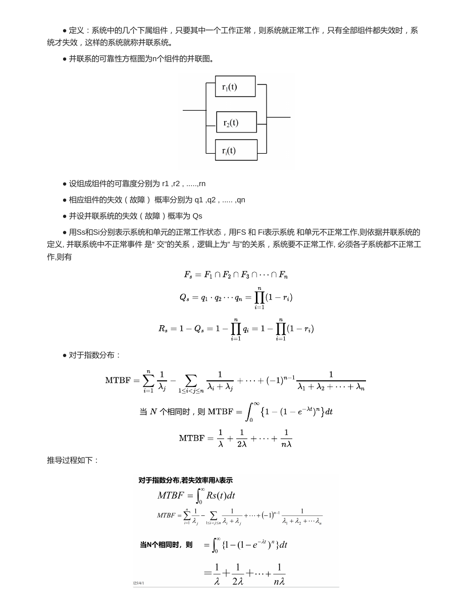
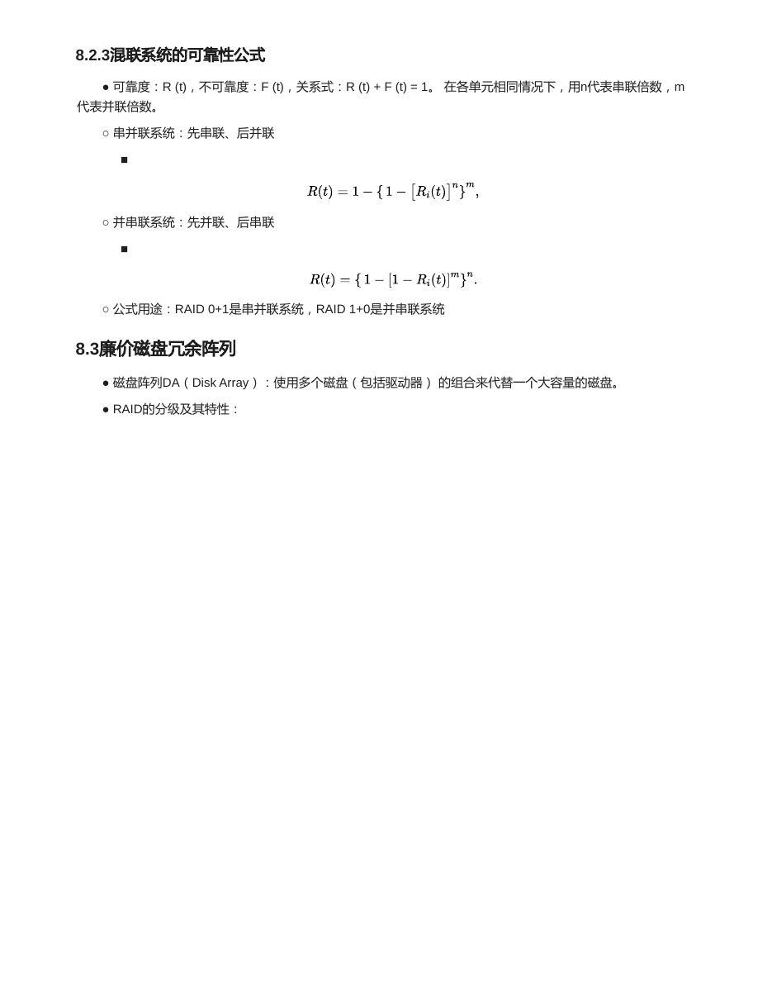
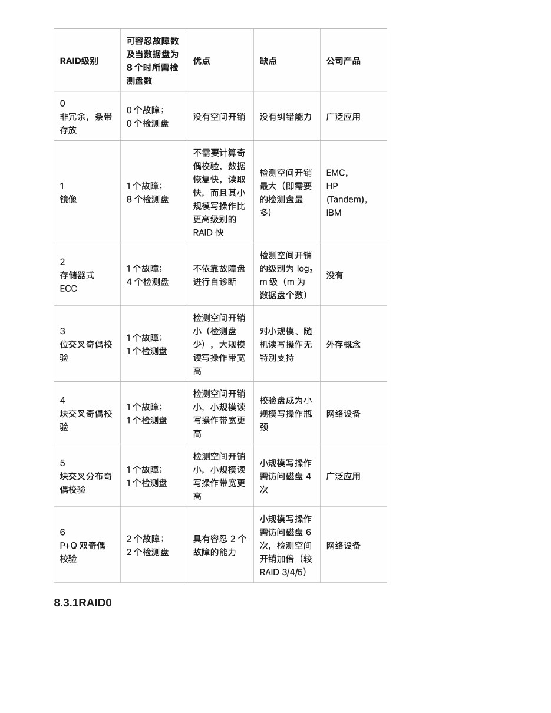
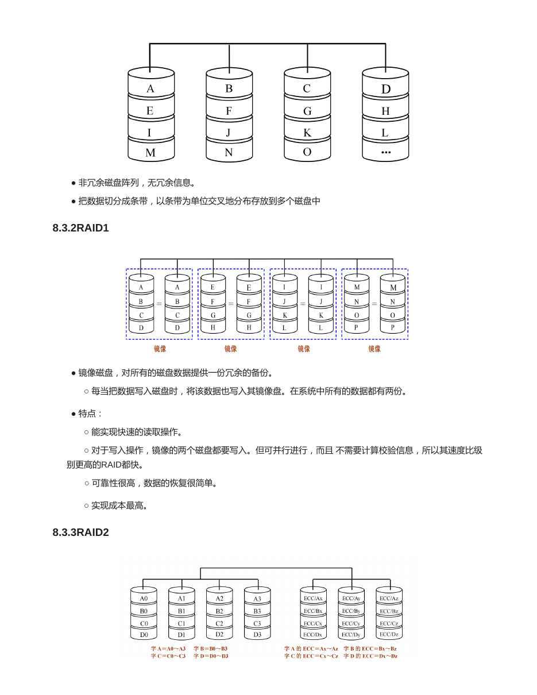
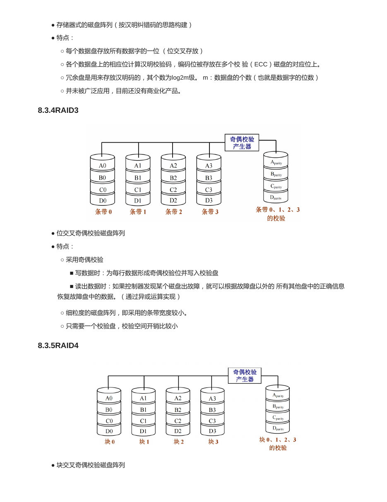
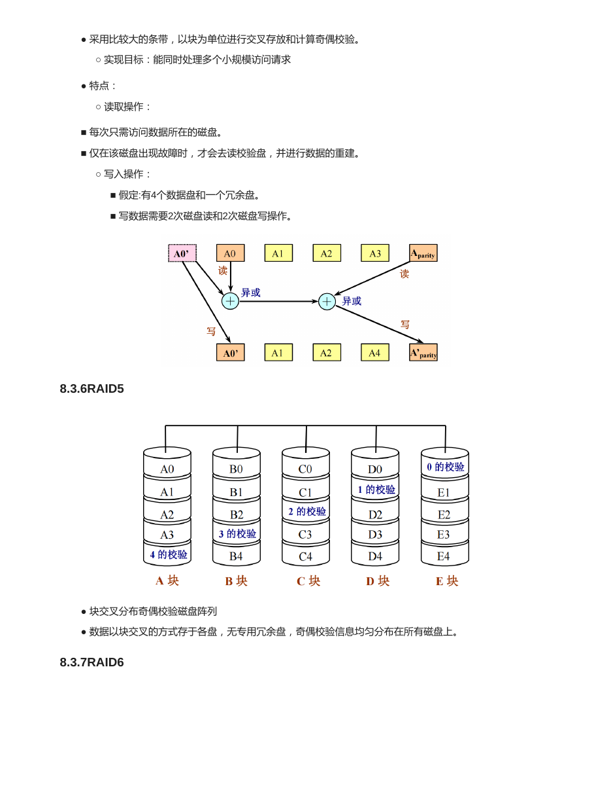
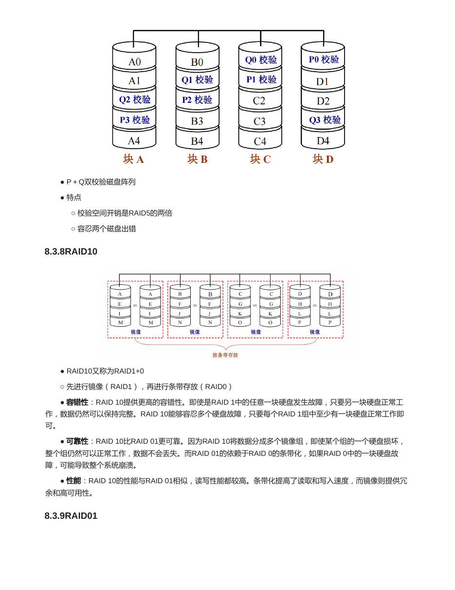
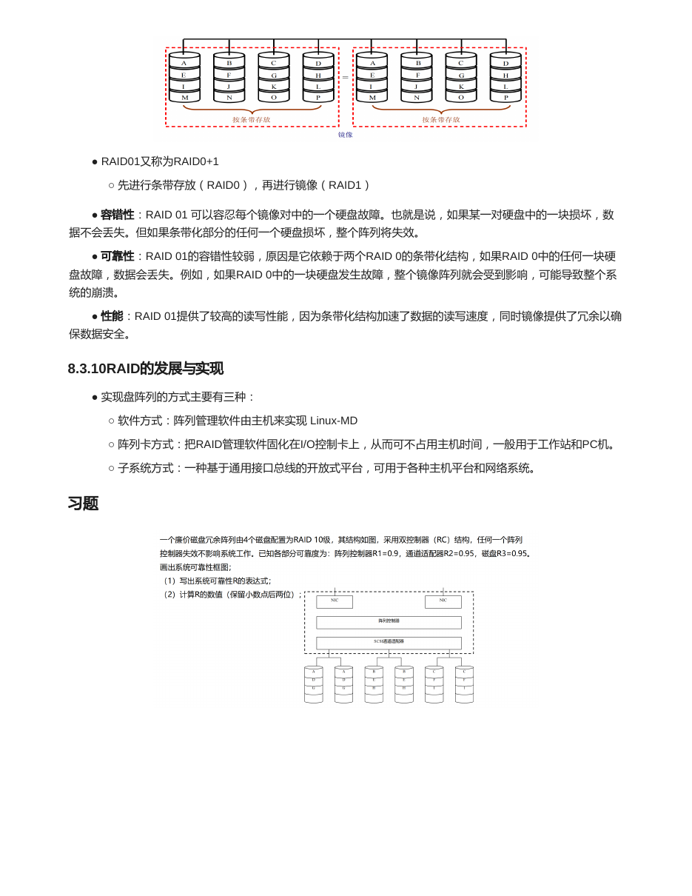
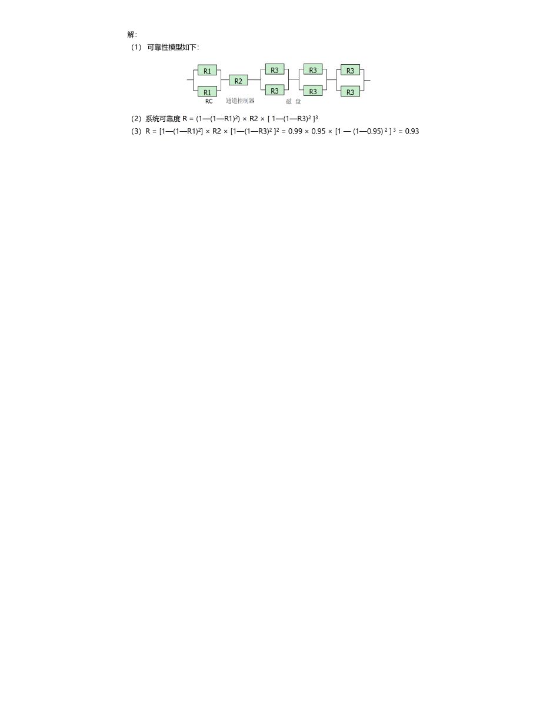
{kind=link}
{kind=link}